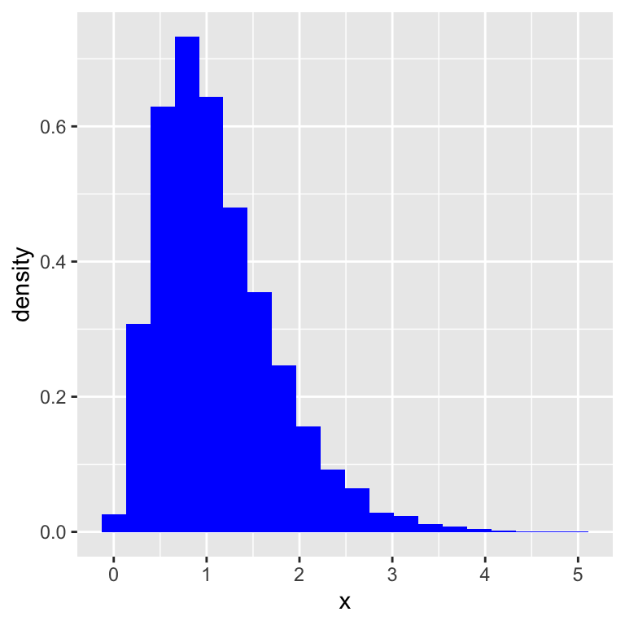
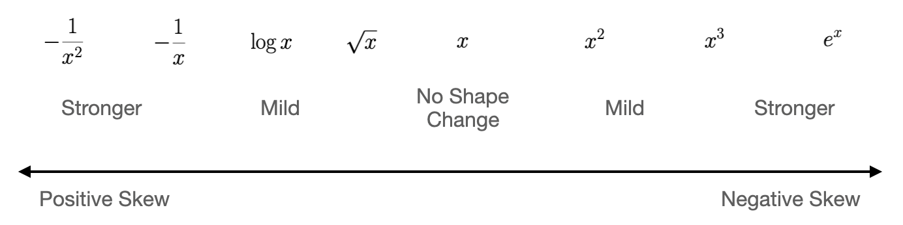
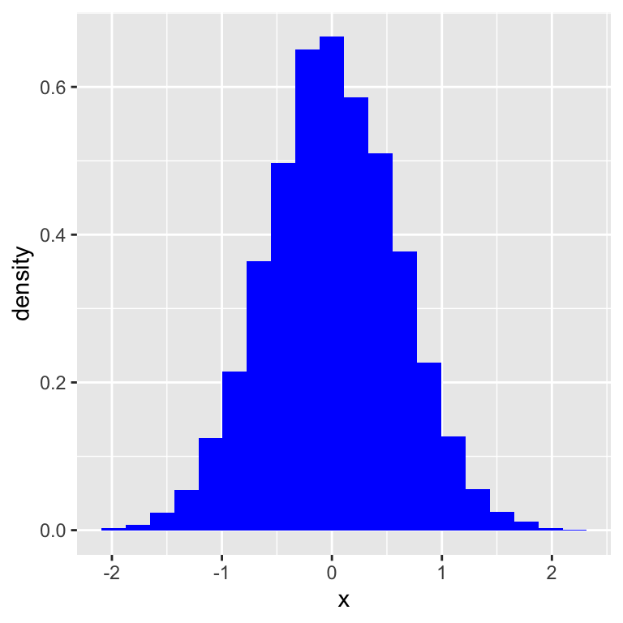
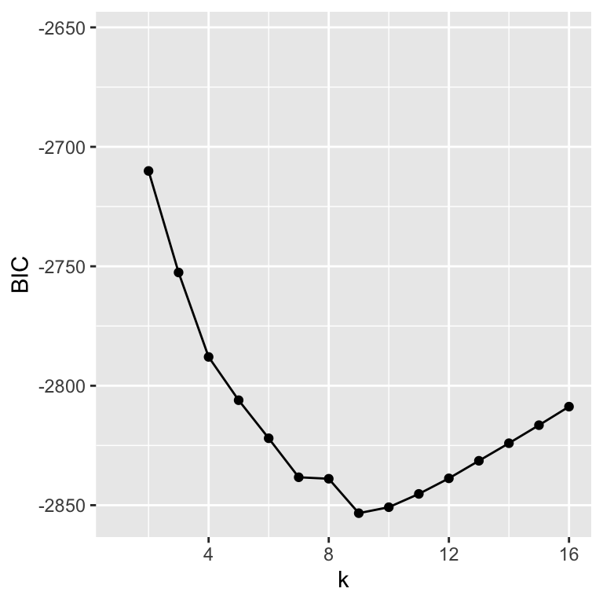

5 Extensions to the Linear Model
5.1 Transformations
In a variable transformation, we mathematically transform data values (e.g., those in one column of a data frame) so as to make their distribution more symmetric. A classic example of such a transformation is \[ x \rightarrow \log x \,, \] where “log” is the natural logarithm function. (To be clear: every datum is transformed separately, so here we would transform the \(n\) data \(\{x_1,\ldots,x_n\}\) into the set of values \(\{\log x_1,\ldots,\log x_n\}\).) A log transformation acts to transform positively skewed data (i.e., data exhibiting a tail that extends to the right in a histogram) so as to make the distribution more symmetric.
TBD: SHOW PICTURE HERE
When should we consider invoking a transformation? A specific example arises in linear modeling: if the distribution of residuals for an ordinary least-squares model appears decidedly non-normal, then the assumption that \(E[\epsilon] = 0\) is presumably violated, and transforming the response variable may mitigate this violation. (But, to be clear, it may not!) Beyond this, we would say simply that if, e.g., one or more of the variables exhibits pronounced skew, one might want to invoke a transformation to see if model predictions are improved (regardless of the type of model being learned).
Below, we show the “ladder of transformations” from John Tukey’s 1977 book Exploratory Data Analysis.

Those variable transformations lying to the right act to spread out larger data values and clump smaller data values, while the ones lying to the left do the opposite.
But, how does one choose which transformation to use?
In practice, one can try a variety of standard transformations from the table above and see which one, e.g., improves model predictions and/or mitigates any skew observed in a residuals plot. This is often sufficient. However, another approach is to utilize the Box-Cox transformation, which expresses, mathematically, the ladder of transformations. The (one-parameter) transformation is defined as \[ x_i^{(\lambda)} = \left\{ \begin{array}{cc} \frac{x_i^\lambda-1}{\lambda} & \lambda \neq 0 \\ \log x_i & \lambda = 0 \end{array} \right. \] Use of the Box-Cox transformation effectively automates exploration of the ladder of transformations, with the optimal transformation (i.e., the optimal value of \(\lambda\)) determined via maximum likelihood estimation. One can then use \(\hat{\lambda}\) directly in data transformation, or “round off” to the nearest integer or half-integer. For instance, \(\hat{\lambda} = 2\) corresponds to an \(x^2\) transformation (or, more concretely, an \(x^2/2 - 1/2\) transformation, meaning the transformed data are both scaled by a factor of 1/2 and translated by a factor of -1/2).
Below, we show how to utilize the boxcox() function of the MASS library to attempt to symmetrize the following data.
suppressMessages(library(MASS))
alpha <- boxcox(lm(x~1))hat.lambda <- alpha$x[which.max(alpha$y)]
print(round(hat.lambda,3))[1] 0.343# the transformation is thus x -> (x^0.343-1)/0.343
x.trans <- (x^hat.lambda - 1)/hat.lambda
5.2 Variable Selection
A linear regression model is an inferential (read: inflexible) model. However, just because a predictor variable exists in a data frame does not mean that it has predictive power! For instance, if we are trying to predict the cost of a hospital stay using a dataset whose predictor variables include gender and whether or not the patient smokes, we will generally find that the former, by itself, does not influence the inferred cost, but that the latter does.
In variable selection, we attempt to determine that subset of the predictors variables that are actually associated with the response variable. Variable selection…
- improves model interpretability: by eliminating uninformative predictors, one can tell a better story of how the predictors are associated with the response
- can improve prediction accuracy: eliminating uninformative predictors can reduce the model mean-squared error, although any substantial reduction is not guaranteed
Variable selection is generally most efficacious (i.e., generally removes more predictor variables from the final model) when the sample size is relatively small compared to the number of predictor variables (and it is necessary if \(n < p\)). However, one should always explore variable selection even when \(n \gg p\), as one never knows what one will find!
5.2.1 Best Subset Selection
This variable selection method is appropriate to use in linear regression settings when \(p \lesssim 25\) (and in logistic regression settings when \(p \lesssim 10\)). Simply put, in this method models are learned for all possible variable combinations (including a null, or intercept-only model). For each value of \(k \in [0,p]\), the best model (in terms of the residual sum of squares) is recorded, so that we reduce the set of all possible models to the set \(\{M_0,M_1,\ldots,M_p\}\) (where \(M_0\) is the intercept-only model, \(M_1\) is the one-predictor-variable model with the lowest RSS, etc.). Then, from this set, we select the one model that is best overall, in terms of having the smallest value of either the Akaike Information Criterion (AIC) or the Bayes Information Criterion (BIC): \[\begin{align*} {\rm AIC} &= \frac{1}{n \hat{\sigma}^2} ( {\rm RSS} + 2k \hat{\sigma}^2 ) \\ {\rm BIC} &= \frac{1}{n} ( {\rm RSS} + \log(n)k\hat{\sigma}^2 ) \,. \end{align*}\] Here, \(\hat{\sigma}\) is an estimate of the standard deviation of the error term \(\epsilon\), i.e., the magnitude of the scatter of data around the regression line.
In the equations above, the additive terms are penalty terms that increase with \(k\) and thus act to prevent overfitting. Since, typically, \(\log(n) > 2\), the BIC metric imposes a larger penalty relative to the AIC metric. Hence
- BIC tends to underfit (i.e., it will select as optimal those models that have fewer variables); and
- AIC tends to overfit (i.e., it will select models with more variables).
The choice of metric is ultimately motivated by one’s inferential goals:
- if one chooses the BIC metric, then one can be confident that every selected variable is informative, but other informative variables might have been left out of the final set, while on the other hand
- if one chooses the AIC metric, then one can be confident that the selected variables include all the informative ones, but the final set may also include some uninformative variables as well.
(Note that the overall number of models considered is \[ \sum_{k=0}^p {p \choose k} = \sum_{k=0}^p \frac{p!}{k!(p-k)!} \,, \] which is, e.g., more than 33 million when \(p = 25\) and over one billion when \(p = 30\). Thus computational efficiency (in terms of speed and memory use) starts to become an issue and thus the effective limit of \(p \lesssim 25\) given above. For logistic regression, the limit is lowered to \(p \lesssim 10\) due to computational speed issues.)
5.2.1.1 Example
In this example, we consider a data frame with 3,419 rows and 16 predictor variables, and we split the data, retaining 70% for training the model and 30% for testing it. Note that in this data frame, the response variable is labeled y: this is necessary for us to be able to use the bestglm() function from the bestglm library.
First, let’s run the bestglm() function with the information criterion (i.e., the IC) being BIC.
suppressMessages(library(bestglm))
# The baseline (all-predictor-variable) model
lm.out <- lm(y~., data=df.train)
mse.full <- mean((predict(lm.out, newdata=df.test)-df.test$y)^2)
print(round(mse.full, 3))[1] 0.266# The best subsets model
bg.out <- bestglm(df.train, family=gaussian, IC="BIC")
print(length(coef(bg.out$BestModel))-1)[1] 9mse.bg <- mean((predict(bg.out$BestModel, newdata=df.test)-df.test$y)^2)
print(round(mse.bg, 3))[1] 0.264For the BIC-based BSS model, we retain 9 of 16 predictor variables and we observe a slight reduction in the test-set mean-squared error. Below, we show how the BIC metric changes as a function of the number of predictor variables \(k\); we see that for \(k \leq 9\), the improvement in the RSS that results from adding a predictor variable overcomes the penalty term, but for \(k > 9\), the reduction in RSS no longer overcomes the penalty.

Now, what happens if we utilize the AIC metric instead?
# The best subsets model
bg.out <- bestglm(df.train, family=gaussian, IC="AIC")
print(length(coef(bg.out$BestModel))-1)[1] 11mse.bg <- mean((predict(bg.out$BestModel, newdata=df.test)-df.test$y)^2)
print(round(mse.bg, 3))[1] 0.265As expected, the AIC-based BSS model is less conservative, retaining 11 of 16 predictor variables (instead of the 9 retained by BIC). And as was the case for the BIC-based model, there is a slight decrease in the test-set MSE.
5.2.2 Forward and Backward Stepwise Selection
As stated in the previous section, best-subset selection is only feasible if the number of predictor variables \(p\) in a dataset is \(\lesssim 25\). What can we do if \(p\) is larger? We might use either forward or backward stepwise selection. In short, forward stepwise selection starts with no predictor variables and adds one at a time, determining the best model at each step, while backward stepwise selection starts with the full set of predictors and takes one out at a time. Forward and backward stepwise selection are examples of greedy algorithms: they make locally optimally choices that may collectively not yield a globally optimal solution, nor will they necessarily yield the same solutions.
5.2.2.1 Example
Let’s repeat the example from the last section, but now with forward-stepwise selection. (We normally would not learn this model, given that \(p = 16\), but here we can compare and contrast its results vis-a-vis best subset selection.)
bg.out <- bestglm(df.train, family=gaussian, IC="BIC", method="forward")
bg.out$BestModel
Call:
lm(formula = y ~ ., data = data.frame(Xy[, c(bestset[-1], FALSE),
drop = FALSE], y = y))
Coefficients:
(Intercept) mag.i col.iJ col.JH J.G J.M20
1.4043 0.4518 -0.7446 0.4803 4.1214 0.3194
J.C J.size H.G H.size
0.2168 -1.1651 -3.1460 1.5903 resp.pred <- predict(bg.out$BestModel, newdata=df.test)
mean((df.test$y-resp.pred)^2)[1] 0.267722While the forward-stepwise model found that \(k = 9\) is optimal, we note that the nine variables retained here are not the same nine variables that were retained when we applied best-subset selection: the greedy forward-stepwise algorithm did not yield the optimal BSS model! We also note that the test-set MSE slightly increased, consistent with the fact that the model here is not the optimal BSS model.
Now let’s try backward-stepwise selection:
bg.out <- bestglm(df.train, family=gaussian, IC="BIC", method="backward")
bg.out$BestModel
Call:
lm(formula = y ~ ., data = data.frame(Xy[, c(bestset[-1], FALSE),
drop = FALSE], y = y))
Coefficients:
(Intercept) mag.i col.iJ col.JH J.G J.size
1.4113 0.4540 -0.7420 0.4833 4.1496 -1.1839
H.G H.M20 H.C H.size
-3.1846 0.3445 0.2248 1.6232 resp.pred <- predict(bg.out$BestModel, newdata=df.test)
mean((df.test$y-resp.pred)^2)[1] 0.2643661While the BIC-based backward-stepwise model also includes nine predictor variables, they are not the same ones uncovered by the forward-stepwise model.